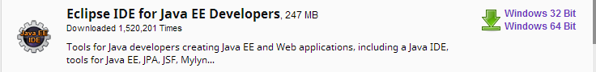
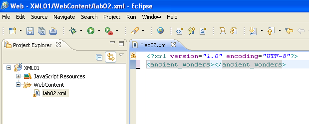

Objectives
- Introduction to XML
- Writting XML using an editor
XML editors
There are many options for editing XML. If you are familiar with Eclipse you can use it for editing. In Eclipse you can view a project in different perspectives. If you use the Web perspective and in creating a file you choose a new XML file Eclipse will then treat the code you enter as XML tags etc.
Alternatively you can download a free XML editor.
Either option is suitable. These labs will show use of Eclipse but a free XML editor like EditiX http://free.editix.com/download.html is easy to learn and use if you prefer to try it.
There are also lots of other editors you may prefer to use as there is no requirement to use a particular editor for this module.
Step3 in this lab will instruct you in the download and installation of Eclipse.
Introduction to XML
XML or eXtensible Markup Language is a specification for storing data. It is also a specification for describing the structure of that data.
While XML is a markup language just like HTML, XML has no tags of its own. It allows you to create whatever tags you need. The only condition is that these newly created tags adhere to the rules of the XML specification.
<?xml version="1.0"?>
<my_children>
<child>
<name> Logan </name>
<gender>Male</gender>
<age>18</age>
</child>
<child>
<name>Rebecca</name>
<gender>Female</gender>
<age>14</age>
</child>
</my_children>
In the journal in Moodle answer the following questions:
- What data is being stored?
- What is the structure of the data?
- What tags were created to describe the data and its structure?
Writting XML
XML, like HTML can be written using any text editor or word processor. Eclipse is an editor that offers additional support for writting HTML, CSS and XML documents.
Eclipse is installed on the college machines.
Open Windows Explorer and navigate to the C:\ drive, there you should find a dev folder, in which there is an eclipse folder. Open the Javascript folder and double click on the eclipse icon.
If you are successful opening this version of eclipse on the college pc you can continue on to step 4. If you wish to download eclipse for your laptop or pen drive, please read on.
To download a copy of eclipse for your laptop go to
Download the first version in the list, it is called Eclipse IDE for Java EE Developers.

Once this has downloaded extract the zip file to your chosen directory on your laptop. You can then navigate to that directory and start eclipse by double clicking on the icon. Now go to step4
It is also possible to intall a portable version on your usb pen drive if you need to.
Follow the steps below to install the eclipse editor on your pen drive.
- Download the portable eclipse zip file from the current topic area in Moodle.
- This is a standard zip archive - not an install program. Place it on your desktop and unarchive it.
- When unarchived, it will have created a folder on your desktop called "portable-eclipse"
- Assuming you have a memory stick, copy this folder to that stick now. This will take approximately 2-3 minutes.
- Once it has copied over, navigate to your desktop and explore the new "portable-eclipse" folder
- Navigate to the eclipse folder and in there you will notice the program "eclipse"
- double click to launch it now.
- It should launch in about 30 second.
Eclipse
- Once you have lauched eclipse at first you will see this splash screen:

- And then it will eventually display this dialog box, Before pressing "OK", read the suggested path carefully:
- This is the path where eclipse will create and manage any XML projects you create. If you are working on the college pc then the suggested path is almost certainly not going to contain the path we wish to use.
- You may choose to use either the G: drive, or the memory stick drive (perhaps I:). Whichever drive you use, append ":\XMLworkspace" to the drive letter.
-
If you are using your own laptop then create a XMLworkspace folder on your desktop and navigate to it so that you are pointing to that folder.
-
It is very important to set up the wrokspace folder correctly today and not to change it for the rest of the semester. Eclipse does not like if you change the workspace folder.
- Press OK to accept the workspace you have chosen. After a few seconds, Eclipse should launch looking like this:
XML uses the same building blocks as HTML:
Tags that define elements, values of those elements, and attributes. An XML element is the most basic unit of your document. It can contain text, attributes, and other elements.
An element has an opening tag with a name written between the < and the > The name, which you invent yourself, should describe the element's purpose and in particular its contents.
Elements may have attributes. Atrributes, which are contained wihtin an element's opening tag, have quotation mark delimited values that further describe the purpose and content of the particular element.
An element can have as many attributes as required, as long as each has a unique name.
White space: you can add extra white space, including line breaks, around the elements in your XML code to make it easier to edit and view. While extra white space is visible in the file and when passed to other applications, it is ignored by the XML processor, just as it is with HTML in a browser.
Eclipse
- Select File->New->Other"
- in the next screen select "Static Web Project"
- Press "Next" and then give the project a name:
- Press "Finish". You will be asked if the project should have a "web perspective":
- Select Yes - and you should now have an empty project:

- Select "New" and then "other" as shown.
- Select XML file as shown and click Next.
- Give the file a name - and press finish. This will create a new xml file:

- Note the generated code, and add the tag
<ancient_wonders>, eclipse will automatically create a closing tag for you:  - Note the * in front of the file name in the tab view. This indicates that the file has not been saved yet. Save the file (File->Save) and observe the * disappear.
Exercise 1
You should now have an xml file with one element called ancient_wonders.
You can now add any child elements you like. The idea is that there is a relationship between the root, or parent element, and its child element. When creating child elements, use names that clearly identify the content so that it's easier to process the information at a later date.
- Type
<wonder>, where wonder identifies the content that is about to appear (name of the child element). - Type Colossus of Rhodes as the content of the
<wonder> element. - Type the closing
</wonder> tag.
Your xml file should look like this:
<?xml version="1.0" encoding="UTF-8"?>
<ancient_wonders>
<wonder>Colossus of Rhodes</wonder>
</ancient_wonders>
Indentation of code is very important for readability. You should indent 2 spaces each time you create a child element.
Tips
- Case matters.
<WONDER> is not the same as<wonder> - Element (and attribute) names should be short and descriptive.
- Element and attrribute names must begin with a letter, an underscore, or a colon. Names that begin with the letter xml (in any combination of upper or lower case) are reserved and cannot be used.
- Element and attribute names may contain any number of letters, digits, underscores, and a few other punctuation characters.
- Although colons, hyphens, and full stop are valid within element and attribute names, it is recommended not to use these are they are used in specific circumstances (such as for namespaces, subtraction, and object properties).
- No elements are allowed outside the opening and closing root tags.